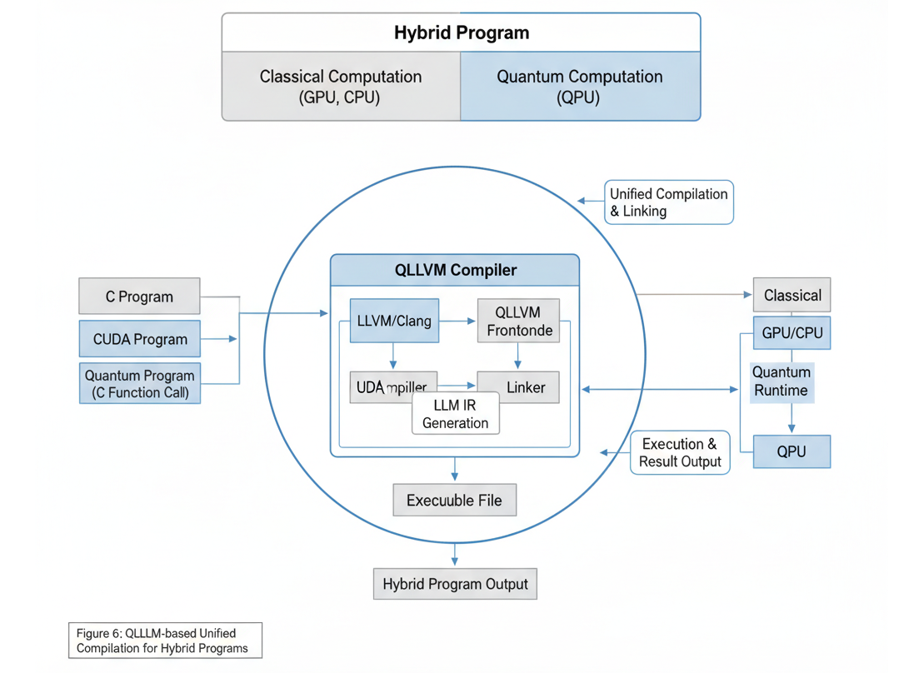
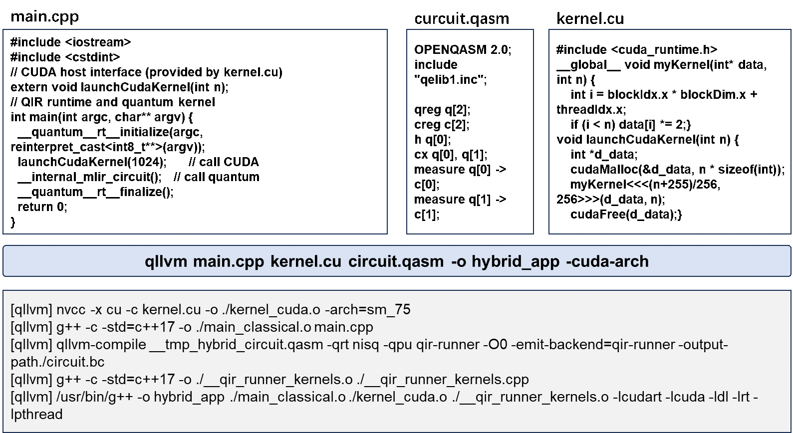

Usage
This section mainly introduces how to use QLLVM to compile quantum circuits, as well as detailed explanations of compilation parameters.
Usage Examples
Using Plugins
Quantum Circuit Composer
Welcome to Quantum Circuit Composer! This plugin aims to provide an integrated development environment for quantum programming, supporting multiple quantum programming languages (QASM, Qiskit, QPanda, OriginIR, QCIS) and multiple compilers (QLLVM, Qiskit, QPanda), and implementing remote/local compilation, QIR simulator running, compilation result statistical comparison and other functions.
Main features:
Multi-compiler support: Configure multiple compilers (self-developed QLLVM, IBM Qiskit, Origin QPanda) simultaneously, compile in parallel with one click, and automatically generate result comparison tables.
Multi-frontend input: Supports QASM, Qiskit Python code, QPanda Python code, OriginIR, QCIS and other input formats, which are uniformly converted to QASM for compilation.
Remote/local compilation: Uses remote server compilation by default (no local compiler installation required), and can also be switched to local compilation.
QIR simulator: Run QIR simulator directly in the plugin to view measurement result statistics.
Statistical comparison: Automatically extracts the number of gates, two-qubit gates, and depth from each compiler after compilation, and generates a comparison table.
Graphical settings: Manage compiler configurations through the settings panel, easily enable/disable, and edit parameters.
Quick start:
Install the plugin - Search for “Quantum Circuit Composer” in the VSCode extension store and install it. - After installation, a circuit board icon will appear in the status bar, click to open the settings panel.
Write quantum circuit - Create a new file, supporting .qasm (OpenQASM), .py (Qiskit/QPanda code), .originir, .qcis, etc. - For example, a simple Bell state QASM file:
OPENQASM 2.0; include "qelib1.inc"; qreg q[2]; creg c[2]; h q[0]; cx q[0],q[1]; measure q[0] -> c[0]; measure q[1] -> c[1];
Compile file - Right-click on the file and select “Compile current quantum circuit file”. - Or open the settings panel and click “▶ Select file to compile” at the top. - The plugin will use all enabled compilers to compile in parallel and display results and statistical comparison tables in the output channel.
Run QIR simulator - In the compiler list of the settings panel, find the QLLVM compiler and click the “▶ Run simulator” button on its right. - Enter shots (number of runs) and random seed (optional) in the pop-up input box. - After simulation is complete, the output channel will display measurement result statistics.
Qcoder
VS Code Sidebar AI Assistant for Quantum Computing Learning and Development
QCoder embeds large model dialogue into the editor sidebar, focusing on quantum algorithms, quantum circuits, and toolchain issues, rather than general chat. It allows users to configure their own API Key for Alibaba Cloud, DeepSeek, or custom SCNet models.
Quick start:
Installation - Search and install in the VS Code extension view, or use Install from VSIX… to install the .vsix distributed by the organization.
Configure API Key (according to the model you actually use)
Open the command palette (Ctrl+Shift+P / Cmd+Shift+P): - QCoder: Set QCoder Qwen API Key: Alibaba Cloud (custom Qwen model) - QCoder: Set QCoder DeepSeek API Key: DeepSeek (custom) - QCoder: Set QCoder SCNet API Key: Only used for custom added SCNet models, unrelated to the three built-in official models
When only using the three built-in SCNet models, you don’t need to configure Qwen / DeepSeek / custom SCNet Key.
Open chat - Click the QCoder icon in the activity bar to open the sidebar chat, or run QCoder: Chat with Quantum Programming Assistant.
Sidebar settings - Open Settings in the title bar or interface: manage custom model lists, interface language, and key writing related to model testing (in supported builds).
Using Command Line
Compiling OpenQASM Files
Basic Compilation:
# Using qllvm
qllvm test.qasm -qrt nisq -qpu qasm-backend -O1
# Output: test_compiled.qasm
Specifying Output Path:
qllvm test.qasm -qrt nisq -qpu qasm-backend -O0 -o folder/try
# Output: folder/try.qasm
Specifying Basic Gates:
qllvm test.qasm -qrt nisq -qpu qasm-backend -O1 -o folder/try \
-basicgate=[rx,ry,rz,h,cx]
With Backend Topology (SABRE Mapping):
qllvm test.qasm -qrt nisq -qpu qasm-backend -O1 \
-qpu-config backend.ini -initial-mapping '[0,1,2]' \
-sabre-cpp
Bell State Example
Create bell.qasm:
OPENQASM 2.0;
include "qelib1.inc";
qreg q[2];
creg q_c[2];
h q[0];
CX q[0], q[1];
measure q[0] -> q_c[0];
measure q[1] -> q_c[1];
Compile and check output:
qllvm bell.qasm -qrt nisq -qpu qasm-backend -O1
cat bell_compiled.qasm
Directly Calling qllvm-compile
# Without SABRE
qllvm-compile test.qasm -internal-func-name test \
-emit-backend=qasm-backend -output-path=test_out.qasm
# With SABRE (linear chain 0-1-2)
qllvm-compile test.qasm -internal-func-name test \
-emit-backend=qasm-backend -output-path=test_sabre.qasm \
-sabre-coupling-map="0,1;1,2"
Printing MLIR / QIR
qllvm test.qasm -emitmlir -qrt nisq -qpu qasm-backend -O1
qllvm test.qasm -emitqir -qrt nisq -qpu qasm-backend -O1
Backend Topology Configuration Example
backend.ini or qpu_config_chain3.txt:
# Linear chain: 0-1-2
connectivity = [[0, 1], [1, 2]]
Compilation Parameter Explanation
This tutorial will introduce detailed explanations of qllvm compilation parameters.
Driver Program (qllvm) Parameters
Parameter |
Description |
Example |
|---|---|---|
-O0 |
No compilation optimization |
|
-O1 |
Use fixed optimization pass sequence |
|
-basicgate |
Specify basic gate set |
|
-qrt |
Specify device type |
|
-qpu |
Specify backend type |
|
-qpu-config |
Specify backend topology (coupling graph) |
|
-emitmlir |
Print MLIR program |
|
-emitqir |
Print QIR program |
|
-customPassSequence |
Specify optimization pass sequence file |
|
-o |
Specify output path and filename |
|
-placement |
Specify mapping method |
|
-initial-mapping |
Specify initial qubit mapping |
|
-sabre-cpp |
Use C++ SABRE at LLVM IR stage (requires -initial-mapping and -qpu-config) |
|
-circuit-state |
Print circuit state (depth, gate count) |
|
-pass-count |
Print execution count of each Pass |
|
-v / –verbose |
Enable detailed output |
|
-cuda-arch |
Specify GPU architecture for hybrid CUDA |
|
-cuda-path |
Specify CUDA installation path for hybrid CUDA (optional, defaults to CUDA_PATH or nvcc derivation) |
|
Common Basic Gate Sets:
[rx,ry,rz,h,cz]: Default[rx,ry,rz,h,cx]: Using CX[su2,x,y,z,cz]: For measurement and control systems
qllvm-compile Parameters
Parameter |
Description |
|---|---|
<input.qasm> |
Positional, input OpenQASM file |
-internal-func-name |
Generated kernel function name |
-no-entrypoint |
Do not generate main entry point |
-O0 |
Optimization level 0 |
-O1 |
Optimization level 1 |
-qpu |
Target quantum backend |
-qrt |
Quantum execution mode (nisq/ftqc) |
-emitmlir |
Print MLIR |
-emitqir |
Print QIR |
-emit-backend |
Specify emission backend (e.g., qasm-backend) |
-output-path |
Output file path |
-output-ll |
Output LLVM IR path (for hybrid compilation linking) |
-sabre-coupling-map |
SABRE coupling graph, edge format 0,1;1,2;2,3 |
-circuit-state |
Print circuit depth and gate count |
-pass-count |
Print execution count of each Pass |
-basicgate |
Basic gate set |
-customPassSequence |
Custom Pass sequence file |
-verbose-error |
Print full MLIR when error occurs |
–pass-timing |
Pass timing statistics |
–print-ir-after-all |
Print IR after each Pass |
–print-ir-before-all |
Print IR before each Pass |
CMake Build Parameters
Parameter |
Description |
|---|---|
-DLLVM_ROOT |
LLVM installation path (with MLIR) |
-DXACC_DIR |
Optional dependency path (antlr4/exprtk); set to empty for QASM-only standalone build: -DXACC_DIR= |
-DCMAKE_INSTALL_PREFIX |
Installation directory (default ~/.qllvm) |
-DQLLVM_QASM_ONLY_BUILD=ON |
Enable QASM-only standalone build |
Optional Dependencies (install as needed)
QIR Runner Backend
Output LLVM bitcode (.bc) for QIR Runner simulator loading. qllvm has built-in QirRunnerCompat that automatically adapts to qir-runner’s QIR base profile (__quantum__rt__initialize signature, __body suffix, mz result indexing, etc.).
# 1. Install qir-runner (conda qllvm environment)
conda activate qllvm
pip install qirrunner
# 2. Generate .bc with qllvm-compile
qllvm-compile bell.qasm -qrt nisq -qpu qir-runner -O1 \
-emit-backend=qir-runner -output-path=bell.bc
# 3. Run with qir-runner
qir-runner -f bell.bc -s 5
qir-runner Output Format Explanation
Output structure for each shot:
Line |
Meaning |
|---|---|
START |
Start of a shot |
METADATAtEntryPoint |
Entry point metadata |
RESULTt0 or RESULTt1 |
Measurement result for each qubit (in measurement order) |
ENDt0 |
End of the shot |
Example (Bell circuit 5 shots):
START
METADATA EntryPoint
RESULT 0
RESULT 0
END 0
START
METADATA EntryPoint
RESULT 1
RESULT 1
END 0
...
qir-runner Command Line Parameters
Parameter |
Description |
Default Value |
|---|---|---|
-f, –file <PATH> |
QIR bitcode file path (required) |
|
-s, –shots <NUM> |
Number of simulation shots |
1 |
-r, –rngseed <NUM> |
Random number seed (for reproducibility) |
Random |
-e, –entrypoint <NAME> |
Entry function name |
EntryPoint |
Output as Qiskit-style counts
Use scripts/qir_runner_counts.py to convert raw output to Qiskit-style get_counts() dictionary:
# Pipe mode
qir-runner -f bell.bc -s 100 | python3 scripts/qir_runner_counts.py -
# Directly specify bc and parameters
python3 scripts/qir_runner_counts.py bell.bc -s 100 -r 42
Output Example (Bell state): {‘00’: 48, ‘11’: 52}
Collaborative Test Script: ./scripts/test_qllvm_qirrunner.sh
.bc is standard LLVM bitcode, can be loaded by tools like [qir-alliance/qir-runner](https://github.com/qir-alliance/qir-runner) (requires Python 3.9+).
Classical-Quantum Hybrid Compilation
Relying on the LLVM ecosystem, QLLVM can integrate with classical compilation passes, CUDA programming models, and HPC runtimes, enabling efficient classical-quantum hybrid task compilation.
{kind=link}

Classical-Quantum Hybrid Program Compilation Mechanism
Supports compiling C++ main programs and QASM quantum circuits into a single executable file:
# Hybrid compilation (qir-qrt-stub stub implementation)
qllvm main.cpp circuit.qasm -o hybrid_app
# Example in examples/hybrid/
qllvm examples/hybrid/main.cpp examples/hybrid/bell.qasm -o hybrid_bell
./hybrid_bell
Using qir-runner as Simulator
# Hybrid compilation + qir-runner simulation (generates exe and .bc)
qllvm main.cpp bell.qasm -qpu qir-runner -o hybrid_bell -O1
# Run (requires qir-runner in PATH)
./hybrid_bell -shots 10
Workflow: QASM → QIR .bc (qir-runner) + C++ compilation → executable indirectly calls qir-runner subprocess at runtime to simulate quantum circuits.
Collaborative Test Script: ./scripts/test_hybrid_qirrunner.sh
See examples/hybrid/README.md for details.
C++ + CUDA + QASM Hybrid Compilation
{kind=link}

Hybrid Program Code Writing Example
Supports compiling C++ main programs, CUDA kernels, and QASM quantum circuits into a single executable file (requires CUDA environment):
cd examples/hybrid_cuda
# Compile (-cuda-arch specifies GPU architecture, e.g., sm_75, sm_86)
qllvm main.cpp kernel.cu circuit.qasm -o hybrid_app \
-cuda-arch sm_75 \
-cuda-path /usr/local/cuda
# If nvcc is in PATH, -cuda-path can be omitted and will be auto-deduced
qllvm main.cpp kernel.cu circuit.qasm -o hybrid_app -cuda-arch sm_86
# Run
./hybrid_app -shots 1024
Dependencies: Clang (supports -x cuda), CUDA Toolkit, qir-runner (pip install qirrunner).
Ubuntu apt Install CUDA: Run bash scripts/install_cuda_apt.sh to automatically install nvidia-cuda-toolkit and create Clang-compatible directory (~/.qllvm/cuda-apt-compat). See examples/hybrid_cuda/README.md for details.